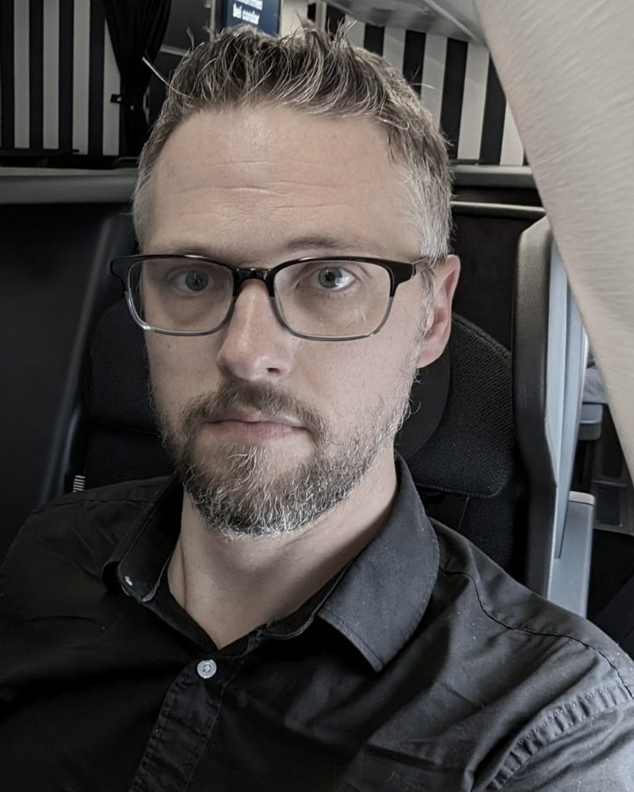

Engineering leader · Loyalty, travel and AI
Matt
Hahnfeld.
I build great teams that create exceptional software. Today, AI is part of the team.
I spent a decade modernizing loyalty technology at Alaska Airlines, including real-time mileage posting and the launch of Atmos Rewards. I led my teams' move to AI, and I'm now building swarmeq, an open-source startup.

01 · About
How I lead
When I joined Alaska Airlines in 2016, I knew our loyalty technology had to modernize, and I spent a decade driving that vision with technical and business leaders across the company. I led 14 product teams and 80+ engineers across loyalty, web and the mobile apps. My teams and I took AI from experiments to production, and we held it to the same accuracy and completeness bar that auditors held us to in healthcare and at the airline.
My teams posted the highest engagement scores among my peers and department for most of my tenure. That's the result I'm proudest of.
I try to be a servant leader who removes roadblocks so people can do their best work, a guide who helps others put AI and modern mobile to work, and an example: accountable, willing to take smart risks.
02 · What I've built
Ten years at Alaska
- 2016–2018
Virgin America into Mileage Plan
My teams migrated Virgin America Elevate members into Mileage Plan. We benchmarked it as one of the most successful loyalty mergers of the past decade, and AwardWallet called it one of the smoothest airline integrations it had seen.
- 2019–2020
Miles that post as you step off the plane
My teams moved Mileage Plan accruals off the mainframe to a real-time, serverless platform on Azure, making Alaska one of the first airlines to post miles as guests stepped off the plane.
- 2021–2022
Joining oneworld
The same real-time platform delivered oneworld tiers and accruals for Alaska's 2021 entry into the alliance, then let us connect partners like Ravn and Air Tahiti Nui in days.
- 2024
A new loyalty platform
I led vendor selection and the 18-month modernization that retired Siebel. We trained 200+ Customer Care agents, and the first year-end ran with zero downtime.
- 2025
Atmos Rewards
We combined HawaiianMiles and Mileage Plan into Atmos Rewards, then united guests of both airlines in one dual-branded app.
- 2026
Industry-first choice-based accruals
Members choose to earn by distance, price, or segments, and about 89% of accruals post in real time. It launched alongside the expansion of Atmos Communities from two to six, with no call center spikes.
- 2025–26
Claude Code across e-commerce
I rolled out Claude Code across e-commerce and extended it to non-engineering roles and other teams at Alaska. AI helped engineers new to mobile build every 2026 Atmos change natively in Swift and Kotlin.
03 · By the numbers
Active members in a program that won two 2026 industry awards
Atmos points held by members at the end of 2025
Time for points to post after a flight, on Alaska and many partner airlines
Mobile delivery pace after turning around an outsourced partnership, within budget
Mobile teams’ time on strategic work after the turnaround
Highest customer satisfaction among airline apps
Guest-facing features delivered in 2025, while launching Atmos and merging two member bases
Completed by a team of eight AI agents. A human sprint takes about two weeks.
Lower spend for top Claude Code users, by matching models and workflows to the work
04 · Now building
swarmeq
A dashboard that shows how each AI agent on a team is doing.
When a team of AI agents works together, it's hard to tell which one is stuck. swarmeq has each agent report how it's doing every 90 seconds, and a live dashboard shows each agent and the whole team at a glance. It only reports; it doesn't change what the agents do.
It's open source under the MIT license, and it's the foundation of the startup I'm building.
05 · More AI work
Open-source projects
Cinder Lite
Runs Anthropic's unmodified Claude Code on an Android or iOS phone, in an app of about 5 to 8 MB.
View on GitHub hahnfeld/fable-standalone-advisorStandalone Advisor
Pairs two AI coding sessions: a lower-cost model writes the code and consults a stronger model on judgment calls.
View on GitHub hahnfeld/teams-adapterMicrosoft Teams adapter
Lets people work with AI coding agents from a Microsoft Teams chat, with approvals right in the conversation.
View on GitHub hahnfeld/msrelay-providerAzure Relay provider
Connects AI agents running on a local machine to the outside world with no inbound ports, keeping traffic on Microsoft's network.
View on GitHub hahnfeld/devtunnel-providerDev Tunnels provider
Another way to reach local AI agents securely, built on Microsoft Dev Tunnels.
View on GitHub github.com/hahnfeldEverything else
Older Android apps and open-source experiments going back to the code.google.com days.
Browse GitHub